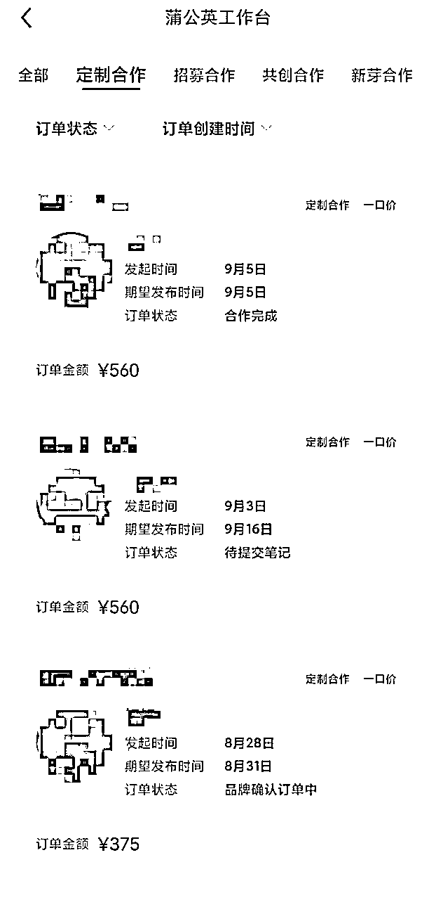
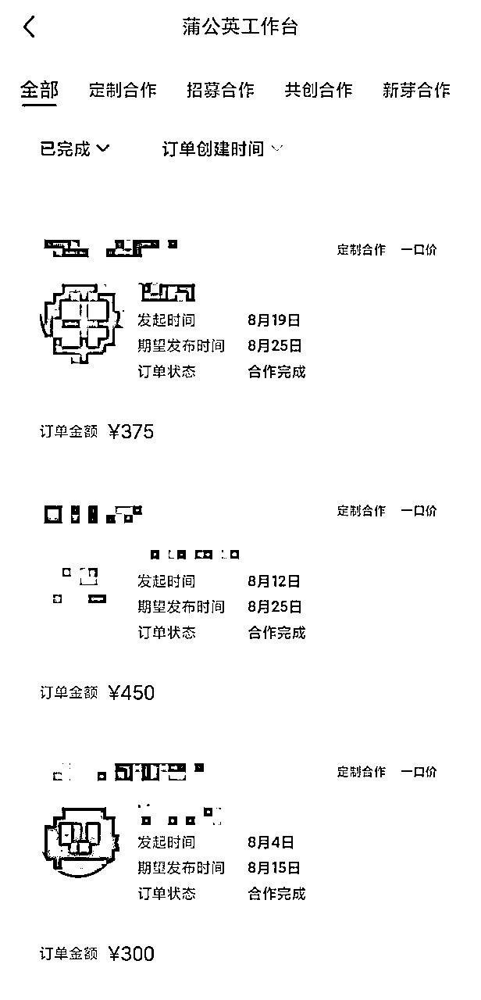
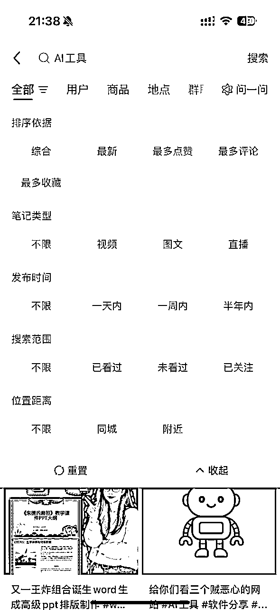
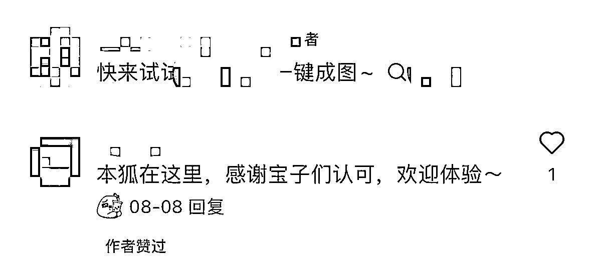
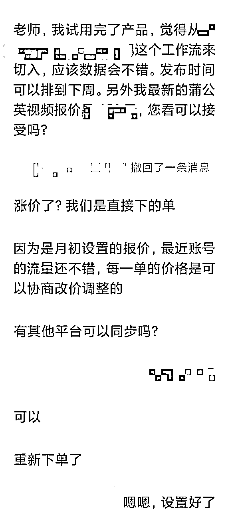
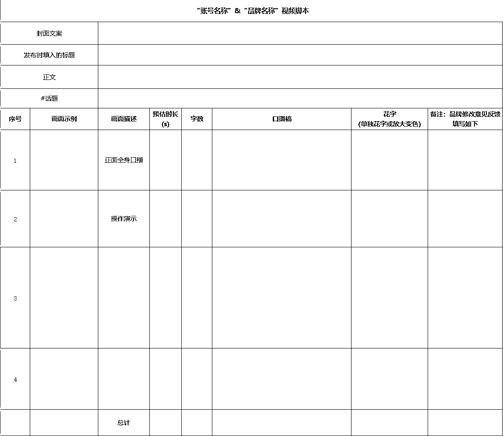
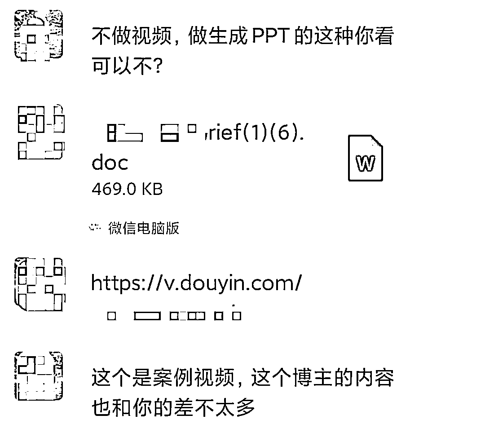

来源：https://m747n4suou.feishu.cn/docx/XOu6dm9LxoBx9yxYnHdcWBtXnHg
大家好，我是方知有，95后，目前在武汉，加入生财刚满一年。
今年5月跟随生财航海开始做AI自媒体，目前小红书和抖音粉丝都是3000+，已经接了二十多个商单（来自小红书70%，抖音30%），变现5000+。
虽然粉丝量不多，但接到的商单数量还是较为可观的，现在一个月可以接到7-12条商单邀约。目前最高商单价格达到了500+（多平台发布），确实亲身感受到了AI产品投放潮的火热。
这是小红书蒲公英后台的合作订单，还有些水下合作在蒲公英是看不到的。


今天就跟大家分享下我从0-1做AI博主和接商单的经历，希望能对准备做/正在做AI自媒体的圈友有帮助，也非常欢迎大家指导和评论交流。
我现在算是跑通了变现0-1阶段，可若想放大收益，让账号收入的天花板更高，就必然涉及到帐号定位和内容形式的问题。
这是我观察到的，现在抖音、小红书平台上较为常见的几种AI账号类型，梳理了他们的变现情况和内容门槛。
| 内容类型 | 人设感/是否出镜 | 全平台粉丝量级 | 商单情况 | 视频长度/价值 | 核心优势 | 账号代表 |
|---|---|---|---|---|---|---|
| AI大V路线 | 出镜、人设感强 | 5万-30万+ | 大厂商单、价格高，商单报价6000以上 | 1-10分钟 | 出镜信任度+长视频高价值+剪辑精致 | 秋芝2046、直男山禾、Xuan酱、AI红发魔女 |
| AI生图+AI视频类 | 弱人设、不出镜 | 千粉到几万粉 | 受限于AI绘图、AI视频类商单 | 1-2分钟 | 内容审美高、艺术性 | 喵同学AIGC、Ai风向标 |
| AI素人IP | 人设感强、 信任度高 | 1000-50000 | 小程序/小网站居多，人设调性好的能接到大厂商单 | 1-2分钟 | 出镜信任度、接地气、真实感 | 陈陈是只AI喵、闪闪AI进化论 |
| 工具/网站号、教程号 | 弱人设、不出镜 | 1000-100000 | 大多是小网站、小工具，但数量多 | 30s-1分钟 | 画面剪辑水平高 | 小e同学、Genji是真想教会你 |
| AI资讯+观点类 | 有人设、声音出镜、对着电脑拍 | 1000-200000 | 商单数量不多，大都是产品发布会、AI大会、或新功能发布 | 1-2分钟 | 观点性强 | AI楼叔、朋克周 |
大家可以参照这些类型，找到自己适合或擅长的细分赛道，记录10-30个不同粉丝量级的对标账号。
在前期起步阶段，最好找低粉对标账号（例如小红书粉丝数低于1万），但内容数据还不错的（有几百上千赞）。低粉账号意味着他们也刚起步，内容形式可能还不太完善，是我们更容易模仿和学习的对象。
而万粉以上博主的内容通常更加精致，数据也有多重因素干扰（粉丝基数、甲方投流等），我们起步阶段较难模仿和参考。
航海手册的和其他圈友的精华帖里也讲得很清楚了，主要思路就是搜索近一个月内的AI领域爆款内容，从中筛选出合适的低粉对标账号

常用搜索词： AI工具、AI教程、效率神器、网站推荐、人工智能、DeepSeek、github、AI、agent、智能体 、AI软件、效率工具
先关注一批AI博主，然后每天花点时间刷小红书首页推荐，慢慢就能收集到足够的对标账号（小红书的推荐机制对新号友好，在首页经常能刷到低粉爆款内容）
发现一些原本做其他赛道（职场、读书、老师）的小红书博主（万粉级别）现在也开始大量做AI类内容，数据表现好的，也能接到很多AI工具商单，并且他们相比不出镜的工具类账号更受AI甲方青睐。
总结了一些做AI自媒体较受欢迎的人设身份：程序员、教师、职场博主、家长，大家可以参考下：
| 人设类型 | 代表账号 | 优势 |
|---|---|---|
| 程序员、技术类 | 艾克ai分享、林月半子的AI笔记 | 因专业性强，容易做出更有深度的内容，不容易被模仿超越，涨粉较快 |
| 教师 | 糯米棋棋子、李塔Rita | 面向教师的AI工具有不少，并且内容流量较大，商单较丰富 |
| 职场博主 | 奔跑的昊子、斯前想后来 | 商单需求丰富，粉丝人群广泛 |
| 家长 | 是超哥的视界 | 人群广泛、商单需求也较丰富 |
从对标账号的内容中找选题：近一个月数据异常值，点赞数明显高于其他笔记的选题
和你越接近的对标账号，做相同爆款选题越容易火。
跨细分赛道找爆款选题有风险，因为账号人群画像不一样，别人能火，你不一定能火。
现在AI领域的内容能不能爆主要还是看选题。选题抓得准，胜过各种花里胡哨的剪辑。
（1）模仿复刻爆款
分析拆解爆款内容，保留爆点和爆款内容框架，尤其是封面标题、开头黄金三秒。
如果能模仿复刻出爆款内容的效果（此处考验对AI工具的使用），甚至在细节上能处理得更好，那么爆的可能性就比较大。如果能把多篇爆款的优点聚合起来（如增加信息密度价值），爆的概率就更大了。但要注意，时长不要增加太多，不然会影响完播率和流量，得不偿失。
（2）从爆款评论区发掘新需求
在爆款内容的评论区中，如果很多人都提出同一个疑问，说明这是一个真实存在的痛点问题。
比如在一个播放量很高的“生成PPT的AI工具测评”的评论区，有一条评论被很多人点赞、附和"有没有能用自己公司的模板一键生成PPT的AI工具？" 我们如果发现了这么一个工具，发出来数据一定也会很不错。
我的第1个小红书千赞内容，就是当时看到一个“DeepSeek生成XXX”的热门选题，很多博主做了数据都爆了，可我用同样的方法跟着做，怎么也成功不了。评论区也有人反映自己尝试不成功。我就在知乎上找资料，终于找到了另一种解决方案，一试就成功了。然后我把它做成教程发出来，后来这条视频因为方法独特，成功率高，持续地获得搜索流量，数据持续涨了三四个月，点赞数积累了一千多，共计涨了有三四百粉丝。
新手如何识别一个账号下，哪些内容是商单？哪些不是？如果看不出来，就无法判断这个账号的变现情况。
这个问题一开始也一直困扰我，直到我接的商单多了，慢慢就悟了。这要结合甲方市场的需求来看：
（1）所有DeepSeek的内容都不是商单，因为众所周知Deepseek不用花钱推广，且Deepseek自带流量。
（2）知名度较高的AI工具，如豆包、Kimi、即梦、腾讯元宝之类的，千粉百粉做的大概率不是商单，几千-几万粉做的大概率就是商单
（3）整个视频80%都在讲一个知名度很小的AI工具，90%就是商单（包括小工具/小网站/小APP，甚至夸克、百度、通义千问等关注度不高的产品）
（4）看评论区，带了品牌#tag，并且有品牌账号留言的基本上都是商单。

（1）小红书、抖音商单的基本价格一般是粉丝数的10%。
（2）小红书达人内容数据较好时可以有溢价空间：报价=阅读中位数* 0.5~1.5
阅读中位数指的是近30天笔记阅读数从高到低排序，排在中间那一篇的小眼睛数。
而0.5-1.5取决于账号调性，包括是否真人出镜(更容易建立信任)、整体画风是否统一有质感、场景与视觉是否匹配品牌定位等。
具体可以看这篇 “资深PR讲解：小红书博主到底该怎么报价？”https://www.xiaohongshu.com/discovery/item/6821f96d000000002300cff7?source=webshare&xhsshare=pc_web&xsec_token=CBFwS3NRXwaxoBzZZ3KffN4NUicdc-k7KRon43S3SGjFM=&xsec_source=pc_share
（3）多平台报价一般是单平台报价加起来，再打个八-九折
（4）关于小红书合作返点
如果是品牌方PR找你合作不会要求返点。到手价=商单价格-平台手续费
如果是第三方PR找你合作会要求返点，一般在20-30%。到手价=商单报价-平台手续费-返点
如果和第三方PR是非报备合作，即不走蒲公英水下合作，无需返点，但价格一般是报备价格的70%。算起来也差不多
起初我觉得20-30%的返点价格高，觉得PR赚钱太容易了。后来和汤姆CC教练在航海群交流，才知道广告公司为了获得合作机会，也要返点给品牌方，很多也是20%以上。所以广告公司在中间可能也没赚到什么钱。
因此，在填蒲公英报价时，可以把报价适当提高20%-30%，给PR留有一定的利润空间，这样会吸引到更多的第三方PR。但是价格太高也可能会吓走品牌方PR，这个就需要自己权衡了。
（5）蒲公英合作的每单价格可以在固定报价的基础上浮动，最低80%，最高150%，这个浮动空间还是比较大的。可以和PR详细沟通，根据每一单的具体情况来谈最终的价格。下面这个就是我成功涨价的案例：

（1）提前在心里准备好近期的报价：单平台报价（小红书报价、抖音报价、视频号报价）、多平台打包报价
（2）当PR来沟通合作时，查看品牌方的Brief，了解产品信息、内容要求
（3）试用产品功能，搜索产品口碑，判断产品优劣
（4）在平台搜索近期的产品内容，评估内容流量水平和制作难度
（5）询问期望发布时间
（6）谈价格（根据内容难度、发布时间、近期阅读量灵活报价）
a.拖延报价：老师，我需要一些时间来体验产品和构思内容方向，然后再给您合适的报价可以吗？
b.体现专业态度：老师，我试用完了产品，觉得从XXXXXXX这个角度来切入，应该数据会不错。我最新的报价是XXX元，您看可以接受吗？
c.应对砍价：最低是XXX元哦，可以同步XXXXXX哪几个平台，其他平台我之前发的XX类内容流量也挺好的。因为时间比较急，需要加班做，价格低不了了
（7）提交文字脚本审核（后面有脚本模板）
（8）提交视频初稿审核
（9）发布
由于商单的选题大方向已定，必须在限定时间内发布，且大部分商单主题并非当下热门话题，想要做出高流量比一般视频难度更大，需要通过以下方法来提高内容数据：
（1）对标模仿
在平台搜索该产品或竞品相关内容，近1-3个月有爆款的就模仿；要是没有，找到数据好的相关内容分析其爆点，植入自己的视频中。
（2）选用爆款选题
打死不能让同事知道的XX邪修工具；记住这3个AI 一个人就能开公司；年度3大邪修神器 让你2025年收入翻倍
（3）融入教程
为减少硬广营销感，把产品功能丝滑融入教程中，如“豆包+微信王炸组合，30秒将Word变成PPT”，其实是PPT小程序广告，流量一直非常凶猛。
（4）痛点切入
找到某个长期存在的痛点切入，获得长期搜索流量。如“1分钟用AI做出精美Logo，设计小白保姆级教程”（其实是即梦的广子）
（5）干货植入
如果甲方要求较全面的产品功能介绍，为避免做成宣传片，我们就需要加上更多干货来减弱视频的营销感，将产品功能包装成某个痛点问题的解决方案，娓娓道来。详见以下案例
（6）利益诱导
能赚钱搞米、做副业接单等，抓住人性的弱点
以上方法可组合使用，效果更佳。以下列举2个数据不错的商单视频脚本来分析一下。
案例1：痛点切入+融入教程
《3分钟AI音乐生成| 90%博主不敢说的BGM野路子》 赞141 藏86
做短视频找不到合适的BGM？还在熬夜扒歌？担心侵权？（痛点切入）
全网博主都在用AI生成音乐，今天手把手教你用XXX加豆包组合拳，三分钟做出原创音乐（融入教程），还能躺着赚米。（利益诱导）
打开豆包，输入提示词，让AI帮我们生成歌曲名和完整歌词。接着进入XXX的官网，点击左侧的创作，点击歌曲。我最常用的模型就是V6模型，歌曲时长最长是4.5分钟，性价比也比较高，一首歌消耗一个积分。输入刚刚豆包生成的歌曲名和歌词，点击参考歌曲。这里可以根据不同的曲风和情绪选择合适的参考歌曲。比如我选择一个R&B风格的，我们来听一下底牌这首歌。…………是我想要的感觉。点击使用之后，XXX会分析风格元素，生成同类型音乐。我们点击下方的创作，很快AI就会为为我们生成两首歌曲，我们来听一下效果。…………整体感觉还不错。那我们现在单独使用一下歌曲描述这个功能，这里可以手动设置曲风、情绪以及人声性别，也可以点击骰子随机推荐，非常适合灵感枯竭的时候。那我们今天就手动设置一下，曲风选择R&B，情绪选择放松、快乐、充满活力。性别女生，点击创作。我们来听一下效果…………点击歌曲旁边的三个小点，下载完整歌曲MP3获取歌曲文件，也可以下载伴奏和分轨音频，人声和伴奏完全分开。(产品功能及教程)
以前大家担心AI音乐不能用，那现在有了XXX就不用怕了。作为自媒体内容创作者，想找到合适的BGM又怕版权问题，XXX真的挺值得一试的。（结尾重申需求场景）
案例2：干货植入+融入教程
《7天起号 接到商单！2025普通人新出路丨AI做自媒体全流程》 赞2494 藏2927
朋友花5000块买了个自媒体课程，学了三个月涨粉还没破千。而我用AI辅助起号，仅仅七天就出了多篇爆款，还接到了很多腾讯这些大厂的商单。（利益诱导）作为一个分享AI实用技能的博主，我今天就完全免费的告诉大家一套自媒体新手起号的可执行路径。而且这条路径你可以用AI在一周内做完。
我把它归纳成简单的三步，找赛道、找对标、找选题，也可以叫三找起号法，每一步都能用AI来提速提效。（融入教程）
第一步找赛道。选赛道呢，我们别拍脑袋，让AI来帮你分析。我们在腾讯元宝里输入提示词，把它当成你的赛道分析师，告诉他你擅长的领域、兴趣方向，是否想露脸的，他就能分析出适合你的赛道、受众群体以及最重要的变现路径，而且元宝里还能自由切换腾讯混元和DeeoSeek两个模型，两个模型换着查看，那你的赛道就能选得更加精准。（产品教程）
第二步找对标。很多人做账号最大的一个错误认知就是搞创新。我要和别人不一样，这样粉丝才能看到我。No, 你所谓的创新其实都是些无用功。大众喜欢看的内容啊其实都差不多，所以爆款笔记已经用数据帮你验证过了。所以我们前期就简简单单的去模仿爆款笔记就可以了。那模仿的也不是抄袭，而是理解这篇爆款的结构。 (干货) 所以你只需要把平时收藏的爆款笔记文案整理下载下来 ， 拖进元宝里，用它的文件解读功能让他帮你提炼笔记里的内容框架、节奏设计，然后可以再用Mermaid的图表这个功能生成一张文案框架结构图。（产品教程）那，接下来的复制爆款呢，我们就可以参考这个结构，换成自己的说法，往里面做填空题就可以了。
第三步，找选题。自媒体最难的其实是选题，尤其是踩准热点。热点也不是靠瞎猜的，而是有各种秘密渠道的。我这里列举几个，第一个平台的活动列表，第二个搜索框下面的热词，第二个搜索框下面的关键词。 (干货) 你靠上面这几个都可以像我这样截图保存下来，然后上传给元宝，让它通过智能识图加对话的组合功能，帮你分析出适合你的账号，而且结合这些热点可以出什么样子的选题，（产品教程） 这是很多人都不知道的技巧。那做自媒体呢，其实大部分人都不是输在努力上，而是输在一些工具和方法上。那换个思路，用AI帮助你，道路自然就变得通畅起来了。
可以看到，越是厉害的博主，广告植入越丝滑。输出的干货内容甚至比产品介绍还要多，大大提高了视频的价值密度，让用户察觉不到是广告。
一份专业的视频脚本模板可以体现博主的实力和专业态度，减少沟通成本，有利于品牌下次复投。这是我从多个PR的脚本模板提炼出的精华版，其中我觉得预估时长是比较重要但容易漏掉的。

（1）了解自己账号的生态位
弄清自己和哪些账号在商务眼中是同一类型（从人设风格、目标人群、内容定位这几个方面）。
如果发现那些账号最近接了哪些商单，可以做相关选题的内容。因为同一类选题下会有多个类似的AI工具，视频爆了后就会有竞品来找你。

我曾经做了一个视频转文字工具的商单数据不错，后来又有两个类似功能的产品找来合作。
据观察，现在投放较多的AI产品有：语音转文字类、视频转文字类、AI做PPT类、AI生图类、AI生视频类、数字人类、教师AI工具……想要接更多商单的，可以重点关注这些内容方向。
（2）重视账号简介描述（身份、内容定位）、内容合集名称，比如：职场AI工具、教师AI工具、学习AI工具，商务PR会倾向选择和自己产品目标人群一致的
（3）小红书的甲方/PR比较看重封面调性，太杂乱可能会被刷掉；抖音的PR不看重封面，只看重内容数据
（4）小红书的报备商单数据需要维护
因为PR能直观看到你的蒲公英商单数据。如果多次数据不佳，之后合作可能会越来越少，只有通过降低报价才能接到单。所以可以通过适当投薯条来提高内容数据。
如何省钱且有效地投薯条可以看这篇笔记：
https://www.xiaohongshu.com/discovery/item/6810b159000000002001c57b?source=webshare&xhsshare=pc_web&xsec_token=CBxE-sejZpyvYN2gkaY3atmKVFgqEephHob8b_hgHY--E=&xsec_source=pc_share
首先要意识到，有数据焦虑是很正常的。并且大多数做流量的人都是会焦虑的。但陷入到焦虑中消耗自己是不行的。
从认知上来说：一条作品数据差，我们可以通过后台数据分析原因，是封面、标题、开头3秒不吸引人？是选题已经过时了？是发布时间不对？分析出原因后，我们可以修改内容，再发第二次。我有好几条作品就是修改后发第二次、第三次数据才变好了。
总结每一次失败的原因，可以提高我们之后做出爆款的概率，让自己的内容能力变得更强。
这种焦虑应该是做每一个项目都会遇到的。焦虑程度也会跟随着自己的项目认知、经历而变化。
我经常看亦仁的小灯塔和程前朋友圈，逐渐意识到心力是创业最关键的能力，比现有能力更加重要，它决定我们为何出发，也决定我们能走多远。所以，要保护自己的心力，不让它被焦虑消耗掉。
做自媒体挺像一种修行的，日供一卒，通过一个又一个作品，不断积累和精进自己的能力，逐步产生复利。
解决焦虑的一种方法是向内：记录自己的情绪，记录后就有所减轻；和AI教练对话；做一个项目里程碑日历，记录自己的点滴进步；运动也能从生理上缓解焦虑
一种方法是向外：看小灯塔、看创业者的采访视频、找同行的圈友、教练聊聊
其实几万粉的大博主也是焦虑的，商单价格越高，压力越大。他们还要投流、投薯条来维持数据。所以，用不着羡慕别人，只要专注自己在做的事情，确保自己的能力在一步步增长就好。
在项目前期，大概3个月的时间，虽然视频流量还可以，但我的粉丝数增长是很缓慢的，商单数量也很少，为了让自己更有信心，先赚到第1块钱建立正反馈。我接过按点赞付费的小程序广告，也接过只投流不付费的产品。
后期粉丝量起来了，商单数量渐渐多了，精力时间有限，就必须要筛选质量好的商单了，拒掉一些了。因为在千粉到万粉之间的阶段，涨粉才是更重要的目标。什么是优质的商单呢？我的理解是：能对账号涨粉有帮助的就是好商单，要么是能匹配上当下热门选题，要么是大厂产品，自带流量。
分享一下我的小红书AI账号这一路的成长经历。粉丝达到3000后，迈入小KOC达人行列，商单数量肉眼可见地增加了。
| 粉丝数 | 商单数量 | 报价区间/元 |
|---|---|---|
| 1-1000 | 5 | 30-100 |
| 1000-3000 | 5 | 100-300 |
| 3000-3800 | 13 | 300-560 |
验证了账号的变现能力后，接下来要把重心放在涨粉上，重点打磨内容质量，适当减少商单数量，研究如何做出万粉博主的内容品质，一步步把商单报价提上去。
由于小红书的去中心化流量机制，对新号的扶持力度较大，新手入局仍然有机会。
在内容上我比较推荐以下2种，因为最近观察到这两赛道，确实有新号成功起号和变现。
| 内容类型 | 人设感/是否出镜 | 全平台粉丝量级 | 商单情况 | 视频长度/价值 | 核心优势 | 账号代表 |
|---|---|---|---|---|---|---|
| AI素人IP | 人设感强、 信任度高 | 1000-50000 | 小程序/小网站居多，人设调性好的能接到大厂商单 | 1-2分钟 | 出镜信任度、接地气、真实感 | 陈陈是只AI喵、闪闪AI进化论 |
| 工具/网站号、教程号 | 弱人设、不出镜 | 1000-100000 | 大多是小网站、小工具，但数量多 | 30s-1分钟 | 画面剪辑要求较高 | 小e同学、Genji是真想教会你 |
写下这篇总结时，我回想起刚起号的前三个月，常常陷入对未来不确定性焦虑中的自己。而此刻你，或许也正处于类似的煎熬时刻。在项目0到1的路上，我唯一走通的道路，就是在九成的人转身离开之后，我仍然坚持再试一次。
AI 时代的浪潮已在脚下，AI自媒体赛场尚未关闭，现在还有机会。
祝大家早日拿到自己想要的结果～
最后，特别感谢生财AI自媒体航海的几位教练——@Elaine @汤姆cc @东篱，他们的真诚分享与耐心解答给了迷茫中的我很多启发与力量。